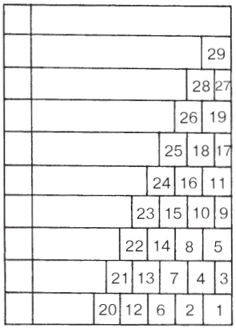
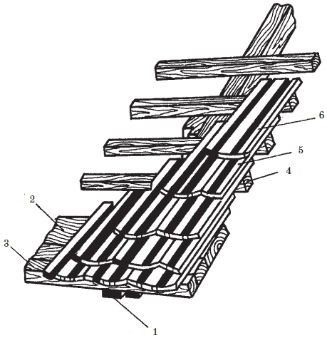
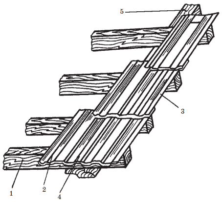
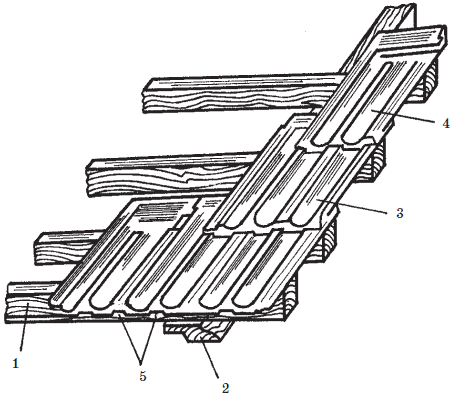
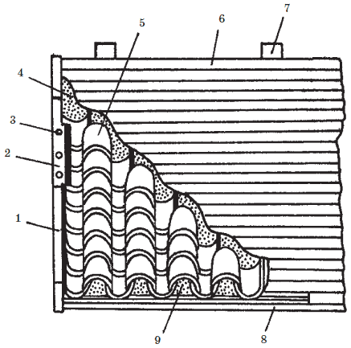
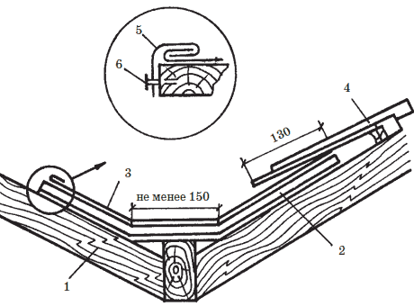
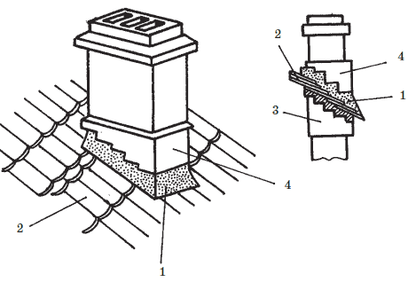
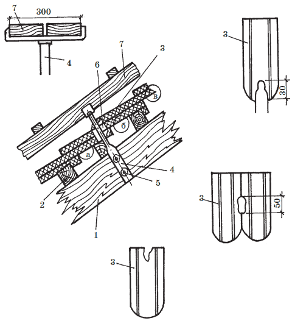

Из черепицы кровля.
 Из черепицы кровля.
Из черепицы кровля.
Все мелкоштучные кровельные материалы укладываются внахлест.
Существует:
• одинарный нахлест, дающий однослойное кровельное покрытие. Этот вид нахлеста образуется пазовой ленточной или штампованной и цементно-песчаной (каждая черепица имеет фальц и пазы и может гребнем цепляться за смежные черепицы);
• двойной нахлест, дающий двухслойное и даже трехслойное кровельное покрытие. Этот вид нахлеста образуется плоскими штучными материалами – плоской ленточной черепицей, сланцем и т. п. Количество слоев покрытия при двойном нахлесте зависит от величины нахлеста, так как вышележащие ряды перекрывают нижние более, чем на половину длины черепицы.
Однако, при этом нельзя забывать, что при двойном и более нахлесте значительно возрастает вес кровли.
К обрешетке черепица крепится гвоздями, скобами, кляммерами, проволокой, пропускаемой в отверстия черепицы, или держится за счет собственного веса.
Плоская ленточная черепица обычно прибивается гвоздями или крепится кляммерами. Кляммерой фиксируется сразу две черепицы. Горизонтальный отворот кляммеры ложится сверху уже прикрепленной черепицы, а под вертикальный отворот подводится смежная черепица. Кляммерные крючки прибиваются к обрешетке со стороны чердака. Сверху отвороты кляммер закрываются вышерасположенным рядом черепицы.
Внимание!
Проволокой крепят все черепицы, располагаемые на карнизных и фронтонных свесах, на ребрах и на коньке. Прикарнизные и фронтонные черепицы можно прикрепить специальными скобами. На крышах с уклоном 35–45° или расположенных в регионах с сильными ветрами черепицу привязывают через один ряд. При уклонах более 45° проволокой крепят каждую черепицу.
Черепичная кровля имеет рисунок, при котором черепицы смежных рядов перевязаны, подобно кирпичам в кладке стены, т. е. стык 2-х черепиц вышерасположенного ряда приходится на середину черепицы ряда, расположенного ниже. Чтобы добиться этого, все нечетные ряды начинаются и заканчиваются целыми черепицами, а все четные – половинчатыми.
Направление укладки черепицы: снизу вверх (от карниза к коньку) и справа налево (для пазовой черепицы), слева направо (для желобчатой черепицы) или от любого фронтона (для плоской черепицы).
Укладка производится в 3–4 рядах одновременно и ведется в следующей последовательности ( рис. 51): в прикарнизном ряду выкладывают две целые черепицы; во втором – сначала половинку, а затем целую; в третьем ряду – одну целую черепицу. Затем возвращаются к первому ряду и кладут еще по одной черепице во всех уже начатых рядах (первом, втором и третьем). В четвертом ряду крепят одну половинчатую и одну целую черепицу, в пятом – одну целую – и снова возвращаются к первому ряду, чтобы добавить по одной целой черепице во все уложенные ряды и т. д. Конек покрывают коньковой черепицей.

Рис. 51. Порядок укладки черепицы
Для того, чтобы нагрузка на стены здания от кровли была равномерной, укладку черепицы желательно вести одновременно на обоих скатах. Крепится черепица проволокой или гвоздями, пропускаемыми в соответствующие отверстия.
Покрытие скатовСовет
Через 3–4 месяца после укладки черепицы поперечные швы рекомендуется промазать со стороны чердака известковым раствором с добавлением в него волокнистых материалов (пакли, сечки), а сверху покрасить масляной краской.
Черепица на скатах укладывается по-разному в зависимости от своей формы. Различают плоскую, пазовую ленточную, пазовую штампованную и желобчатую рядовые черепицы из глины или цементно-песчаного раствора.
Плоская черепица ( рис. 52) образует довольно тяжелую двухслойную или трехслойную кровлю. Укладывается она от любого фронтона, крепится гвоздями или кляммерами, а крайние черепицы – специальными скобами или проволокой. Прикарнизный ряд укладывается на сплошную обрешетку карнизного свеса, при этом черепицы цепляются за край карнизной обрешетки. Черепицы второго ряда крепятся за верхний торец черепиц первого ряда. Все последующие ряды крепят за бруски обрешетки подобно первому ряду, за исключением приконькового ряда, который укладывается подобно второму прикарнизному ряду.

Рис. 52. Устройство кровли из плоской черепицы: 1 – стропильная нога; 2 – дощатый настил; 3 – выравнивающая рейка; 4 – обрешетка; 5 – нижняя черепица; 6 – верхняя черепица
Пазовая ленточная черепица ( рис. 53) имеет продольные пазы, благодаря которым образует более прочное и водонепроницаемое кровельное покрытие и укладывается в один слой.

Рис. 53. Устройство кровли из пазовой ленточной черепицы: 1 – карнизная обрешетина; 2 – верхняя черепица; 3 – нижняя черепица; 4 – продольный стык; 5 – стропильная нога
Укладывается справа налево, начиная с фронтонного или вальмового края. Пазы черепиц должны плотно цепляться друг за друга. Если черепица закреплена в пазе соседней черепицы не очень плотно, место их соединения промазывают известково-цементным раствором.
Из пазовой ленточной черепицы устраивают крыши простой конфигурации.
Пазовая штампованная и цементно-песчаная черепица ( рис. 54) имеет как продольные, так и поперечные пазы и также образует однослойную кровлю. Благодаря поперечным гребням получаются прочные водонепроницаемые стыки не только в продольном, но и в поперечном направлении. Черепица укладывается справа налево и крепится к обрешетке проволокой или скобами.

Рис. 54. Устройство кровли из пазовой штампованной черепицы: 1 – карнизная обрешетина; 2 – стропильная нога; 3 – нижняя черепица; 4 – верхняя черепица; 5 – продольный стык
Глиняная штампованная и цементно-песчаная черепицы являются самыми водонепроницаемыми видами черепичной кровли.
Желобчатая черепица ( рис. 55) используется не только для покрытия конька и ребер, но и для устройства рядовой кровли. Желобчатую кровлю делают обычно на крышах с уклоном 20–33 %. При меньшем уклоне вода будет протекать в местах стыков, а при большем уклоне существует опасность того, что черепица сползет с крыши.

Рис. 55. Устройство кровли из желобчатой черепицы: 1 – ветровая доска; 2 – прижимная планка; 3 – гвоздь; 4 – известковый (глиняный) раствор; 5 – черепица; 6 – цельное дощатое основание; 7 – стропильная нога; 8 – выравнивающая рейка; 9 – заполнитель (черепичный бой)
В отличие от ранее рассмотренных черепичных кровель для желобчатой черепицы требуется сплошное деревянное основание 6. Крепится она к основанию известковым раствором с добавкой волокнистых материалов или глиной, смешанной с рубленой соломой. Толщина известкового или глиняного слоя – 4 должна составлять 1-12 мм. Промежутки между основанием и черепицей заполняются кирпичным или черепичным щебнем – 9. Укладывается желобчатая черепица слева направо таким образом, чтобы суженный край черепицы смотрел вниз. Черепицы вышерасположенного ряда входят нижними суженными краями в верхние расширенные края черепицы нижерасположенного ряда.
Покрытие конька и реберКонек крыши и наклонные ребра выкладываются специальными коньковыми желобчатыми черепицами. Каждая коньковая черепица имеет пазовый ободок, благодаря которому она цепляется за другую черепицу. Коньковая черепица укладывается в направлении укладки рядовой черепицы на скатах: слева направо или справа налево. Черепица на ребрах укладывается снизу вверх. Места стыка ребер с коньком заделывают цементным раствором или кровельной розеткой из оцинкованной стали. Крепят коньковую черепицу к обрешетке проволокой и укладывают на известковом растворе.
Покрытие ендов (разжелобков) и примыканий к вертикальной стенеЕндовы и разжелобки черепичной крыши закрывают картинами из оцинкованной стали.

Рис. 56. Покрытие разжелобка черепичной кровли: 1 – стропильная доска; 2 – дощатое основание разжелобка; 3 – полоса оцинкованной стали; 4 – черепица; 5 – кляммера; 6 – гвоздь
Примыкания черепичной кровли к вертикальной стене закрывают фартуком из оцинкованной стали, который крепят кляммерами к основанию под крайними черепицами и прибивают гвоздями к заклодному бруску.
Устройство воротника дымовой трубыНа черепичной кровле вокруг трубы делают так называемую «выдру» из цементно-песчаного раствора. Это одно из самых уязвимых мест такой кровли, т. к. плохой по качеству раствор или плохое качество его укладки со временем может растрескаться и дать течь. Поэтому на выполнение этого элемента необходимо обращать особое внимание ( рис. 57).

Рис. 57. Черепичная кровля. Устройство воротника дымовой трубы: 1 – воротник из раствора; 2 – черепица; 3 – нижнее утолщение ствола; 4 – верхнее утолщение ствола
Черепичное покрытие должно плотно лежать на обрешетке вокруг ствола дымовой трубы. Щель между стволом и кровлей выкладывается подворотничками из оцинкованной стали. Затем ее заполняют цементно-песчаным раствором таким образом, чтобы вокруг трубы образовался воротник 1, выступающий над кровлей. Нижняя часть воротника расширена и плотно лежит на черепичной кровле 2, а верхняя часть точно облегает ствол дымовой трубы 3. Для лучшего отвода воды на воротнике со стороны конька устраивают выступ с двумя наклонными плоскостями.
При выполнении кровельных работ, чтобы не повредить уже уложенную кровлю из черепицы, используют постоянные мостики, т. е. настил из досок ( рис. 58). В дальнейшем эти мостики будут служить и при эксплуатации кровли – для ремонта крыши, а также они обеспечат доступ к дымовой трубе или слуховому окну. Их устраивают от выхода на крышу к дымовой трубе и вдоль конька и карнизов.

Рис. 58. Устройство ходового мостика на черепичной кровле: 1 – стропильная нога; 2 – брусок обрешетки; 3 – плоская черепица; 4 – штырь; 5 – болт; 6 – раствор; 7 – ходовой мостик
Мостик 7 крепится штырями 4 непосредственно к обрешетке 2 вдоль или поперек стропил 1. Штыри устанавливают в стыках смежных черепиц 3. Все черепицы вокруг штыря дополнительно крепятся гвоздями. Мостик устанавливается на уже готовой части кровли: для этого в местах его крепления снимают и окалывают черепицы, после чего крепят мостик к обрешетке, черепицы прибивают на место, а отверстия заделывают цементным раствором 6.

Как построить Дом ? . E-mail: _pvi@ukr.net
администрация сайта не претендует на их авторство и не несёт ответственности за их содержание.